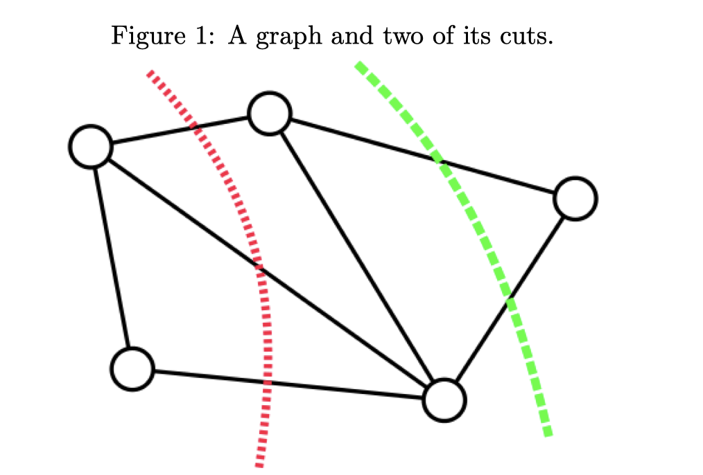
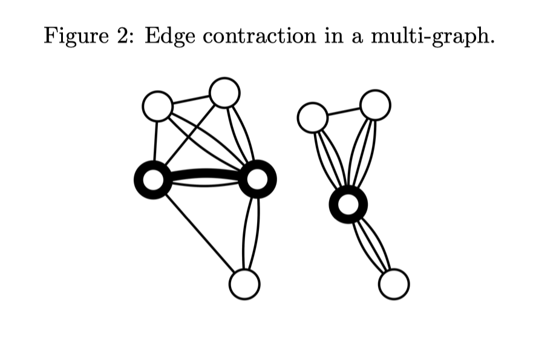
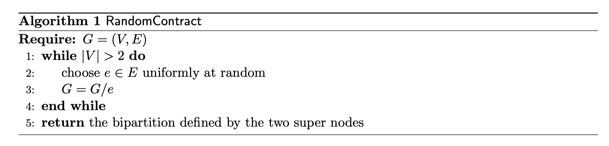
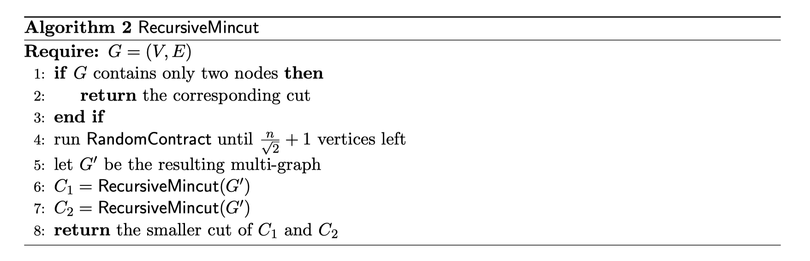
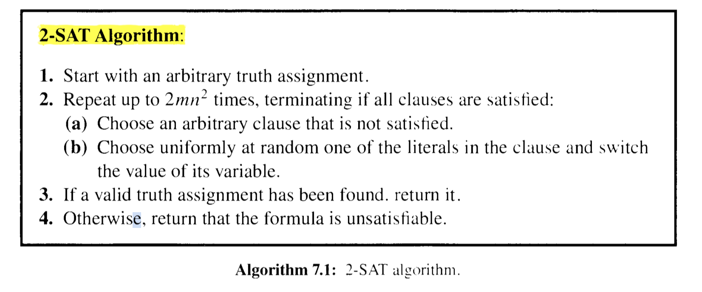
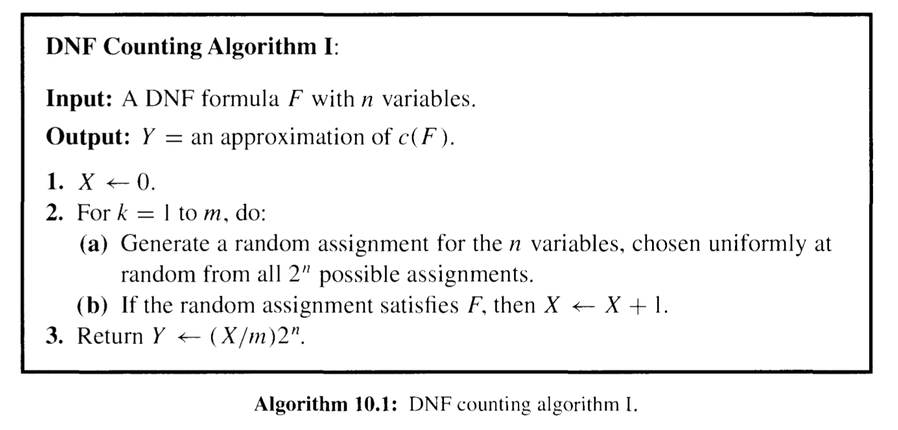
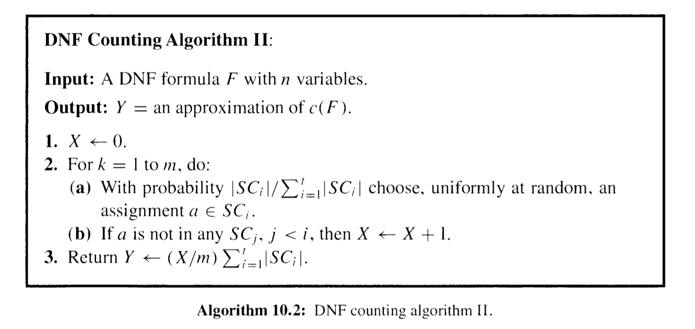

basic
相关定理¶
Theorem 3.1 [Markov’s Inequality]: Let X be a random variable that assumes only nonnegative values. Then, for all a>0, $$ \operatorname{Pr}(X \geq a) \leq \frac{\mathbf{E}[X]}{a} $$ Theorem 4.5 (泊松实验得到期望的概率): Let X_{1}, \ldots, X_{n} be independent Poisson trials such that \operatorname{Pr}\left(X_{i}\right)=p_{i}. Let X=\sum_{i=1}^{n} X_{i} and \mu=\mathbf{E}[X]. Then, for 0<\delta<1 : $$ \begin{gathered} \operatorname{Pr}(X \leq(1-\delta) \mu) \leq\left(\frac{\mathrm{e}^{-\delta}}{(1-\delta)^{(1-\delta)}}\right)^{\mu} \end{gathered} \tag{4.4} $$ $$ \begin{gathered} \operatorname{Pr}(X \leq(1-\delta) \mu) \leq \mathrm{e}^{-\mu \delta^{2} / 2} \end{gathered} \tag{4.5} $$
Again, the bound of Eqn. (4.4) is stronger than Eqn. (4.5). but the latter is generally easier to use and sufficient in most applications.
Corollary 4.6: Let X_{1}, \ldots, X_{n} be independent Poisson trials such that \operatorname{Pr}\left(X_{i}\right)=p_{i}. Let X=\sum_{i=1}^{n} X_{i} and \mu=\mathbf{E}[X] . For 0<\delta<1, $$ \operatorname{Pr}(|X-\mu| \geq \delta \mu) \leq 2 \mathrm{e}^{-\mu \delta^{2} / 3} . \tag{4.6} $$ In practice we often do not have the exact value of \mathbf{E}[X]. Instead we can use \mu \geq \mathbf{E}[X] in Theorem 4.4 and \mu \leq \mathbf{E}[X] in Theorem 4.5 (see Exercise 4.7).
MinCut (Minimum Cut)¶
参见 here
问题定义: 求一个无向图的最小割 (代价为边的数量).

遍历的复杂度为边的exp级别
Karger’s Algorithm¶
- Edge Contraction 边收缩
去掉一条边, 两个节点合一, 两点相连边之外的其他边保持不变

- Random Contraction Algorithm
每次都随机 contract 一条边, 直到只剩下两个节点 (每次点数-1, 因此会迭代 n-2 次).

- Karger–Stein Algorithm

2-SAT (CNF conductive normal form)¶
- 《Probability and Computing》ch.7
The general SAT problem is NP-hard. We analyze here a simple randomized algorithm for 2-SAT, a restricted case of the problem that is solvable in polynomial time. 来个例子: $$ \left(x_{1} \vee \overline{x_{2}}\right) \wedge\left(\overline{x_{1}} \vee \overline{x_{3}}\right) \wedge\left(x_{1} \vee x_{2}\right) \wedge\left(x_{4} \vee \overline{x_{3}}\right) \wedge\left(x_{4} \vee \overline{x_{1}}\right) \tag{7.2} $$ 需要满足一组 clause (与), 每一个条件是两个元素的或 —— 因此假如一个 clause 不满足, flip 其一一定会让该 clause 满足.

下面来算
the probability that we decrease the number of matches is at most 1 / 2 . Hence, for 1 \leq i \leq n-1, $$ \begin{aligned} &\operatorname{Pr}\left(X_{i+1}=j+1 \mid X_{i}=j\right) \geq 1 / 2 \ &\operatorname{Pr}\left(X_{i+1}=j-1 \mid X_{i}=j\right) \leq 1 / 2 \end{aligned} $$ The stochastic process X_{0}, X_{1}, X_{2}, \ldots is not necessarily a Markov chain, 因为X增大的概率取决于当前步时, 不符合的clause和预期的S是相差一个还是两个, 因此和过去相关. 考虑一个更坏的情况/下届 (Markov) Y_{0}, Y_{1}, Y_{2}, \ldots : $$ \begin{gathered} Y_{0} =X_{0}; \ \operatorname{Pr}\left(Y_{i+1}=1 \mid Y_{i}=0\right)=1 ; \ \operatorname{Pr}\left(Y_{i+1}=j+1 \mid Y_{i}=j\right)=1 / 2 ; \ \operatorname{Pr}\left(Y_{i+1}=j-1 \mid Y_{i}=j\right)=1 / 2 . \end{gathered} $$ 再定义 h_i 为从匹配i个的状态出发, 到达S所需步数的期望. 易知 h_{n}=0 and h_{0}=h_{1}+1 并且 h_{j}=\frac{h_{j-1}}{2}+\frac{h_{j+1}}{2}+1, \quad 1 \leq j \leq n-1; 观察, 可知对于 0 \le i \le n-1 均有 h_{j}=h_{j+1}+2 j+1, 因此最坏情况下 (初始和S没有匹配) 有 $$ h_{0}=h_{1}+1=h_{2}+1+3=\cdots=\sum_{i=0}^{n-1} 2 i+1=n^{2} $$ 也即, 在最坏情况下, 我们期望经过 n^2 步得到正确答案.
最终, 我们可能得到以下定理
Theorem 7.2: The 2-SAT algorithm always returns a correct answer if the formula is unsatisfiable. If the formula is satisfiable, then with probability at least 1-2^{-m} the clgorithm returns a satisfying assignment. Otherwise, it incorrectly returns that the formula is unsatisfiable.
第一点显然. 下面计算当该问题可行时, 上述算法错误返回 false 的概率. 我们总共运行 2mnn 次, 将其按照长度 2nn 划分. 由于最坏情况下, 期望 h_0=n^2, 利用 Markov’s inequality (\mathrm{P}(X \geq a) \leq \frac{\mathrm{E}(X)}{a}), 有经过 2nn 次没有得到正确答案的概率为 \operatorname{Pr}\left(Z>2 n^{2}\right) \leq \frac{n^{2}}{2 n^{2}}=\frac{1}{2}, 因此, 重复 m 次都没有得到正确答案的概率为 2^{-m}.
The Monte Carlo Method¶
Theorem 10.1: Let X_{1}, \ldots, X_{m} be independent and identically distributed indicator random variables, with \mu=\mathbf{E}\left[X_{i}\right]. If m \geq(3 \ln (2 / \delta)) / \varepsilon^{2} \mu, then $$ \operatorname{Pr}\left(\left|\frac{1}{m} \sum_{i=1}^{m} X_{i}-\mu\right| \geq \varepsilon \mu\right) \leq \delta . $$ That is, m samples provide an (\varepsilon, \delta)-approximation for \mu.
一个例子: 用MC估计 \pi¶
- Ch10.1
在XY轴 [-1,1] 上随机取值, 记事件 Z 为点落在原点为圆心的圆中 (可知概率为 \pi / 4). 重复 m 次, 记 W=\sum_{i=1}^{m} Z_{i}, t则有 $$ \mathbf{E}[W]=\mathbf{E}\left[\sum_{i=1}^{m} Z_{i}\right]=\sum_{i=1}^{m} \mathbf{E}\left[Z_{i}\right]=\frac{m T}{4} . $$ 因此可以用 W^{\prime}=(4 / m) W i来估计 \pi. Applying the Chernoff bound of Eqn. (4.6), we compute $$ \operatorname{Pr}(|X-\mu| \geq \delta \mu) \leq 2 \mathrm{e}^{-\mu \delta^{2} / 3} \tag{4.6} $$
Application: The DNF Counting Problenl¶
- 10.2
问题定义: 分离 disjunctive normal form (DNF). $$ \left(x_{1} \wedge \overline{x_{2}} \wedge x_{3}\right) \vee\left(x_{2} \wedge x_{4}\right) \vee\left(\overline{x_{1}} \wedge x_2 \wedge x_{3}\right) $$ DNT 计数一定比上面的 SAT 问题 (也叫 CNF, conductive normal form) 更难: 因为一个DNF取反就是一个SAT问题, 因此只要 \text{\#DNF} < n SAT 就可解.
下面是一个 naive 的解法 (类似上面估计圆周率的例子)

下面来改进采样策略:假设我们需要满足的条件组是 F=C_{1} \vee C_{2} \vee \cdots \vee C_{1}, 易知对于 clause C_{i} has \ell_{i} literals, 它包括的元素的取值固定了, 因此共有 2^{n-\ell_{i}} 个解. 我们定义 U=\left\{(i , a) \mid l \leq i \leq t \quad \text{and}\quad a \in S C_{i}\right\} 就是前面加了一个 index; 因此计数不变 \sum_{i=1}^{t}\left|S C_{i}\right|=|U|. 而我们真正要求的是 SC的交集 c(F)=\left|\bigcup_{i=1}^{t} S C_{i}\right|, 为此, 我们定义一个新的集合 $$ S=\left{(i, a) \mid 1 \leq i \leq t, a \in S C_{i}, a \notin S C_{j} \text { for } j<i\right} $$ 也即, 给所有的SC定义指标 (顺序), 对于满足 SC_i 的解中, 只保留前面约束都不满足的例子, 这样, S集合的大小就是 c(F). 由于 U集合的大小是可以计算的, 为了求 DNF计数 (S集合大小), 我们只需要计算它们的比值, MC模拟. 具体算法如下

Theorem 10.2: DNF counting algorithm II is a fully polynomial randomized approximation scheme (F P R A S) for the DNF counting problem when m=\left\lceil\left(3 t / \varepsilon^{2}\right) \ln (2 / \delta)\right\rceil.
利用到式 (4.6) 或定理 (10.1).
approximation Algorithm¶
min vertex cover 边覆盖¶
- min vertex cover 问题: G=(V,E), s \subset V is VC if \forall (u,v) \in E, |\{u,v\} \cup S| \ge 1. 也即要求找到一个点集, 使其能够覆盖所有的边 (边的一个点在点集S中即可).
- 可以证明, 该问题为 NP
目标: 设计一个算法 A, A(G) \to S, 要求 该算法是 \alpha\text{-Approx} 的, 也即 \frac{S}{OP}\le \alpha
- 一种 Greedy 算法: 每次选择degree的点. 可以证明这一算法是 \log n\text{-Approx} 的.
- 构造一个反例: 有一个长度为k的点集L, 然后构造一组点集 R_i, 使得 R_i 中得点都只和L中的点相连, 度数为i, 并且任意两个点不会连相同的一个L中的点 (因此L中点的度数最多为k).
- 这样, 用 Greedy 方法每次会选择 R_k, R_{k-1},..., 而最优解是点集L
- 构造的R_i点的总数为 \sum_{i=1}^k int(k/i) \approx O(k\log k)
下面介绍一种 2\text{-approx} 的算法.
- 算法: 每次选择一条边, 然后将两个点从图中删去.
- 可以证明, 若选出来的点大小为 |S|=2t, 则VC问题的最优解至少是t —— 因为我们已经找到t组没有共享点的边了.